Provider Usage — screenshot gallery
Real plugin components, real SDK primitives, real nous dark theme. Every value below is synthetic sample data. These are component-harness captures, not screenshots of the packaged Electron desktop app.
Demo clip
A short screen recording of the component harness: the pointer moves to the chip, clicks, and the popover opens. Every value is sample data; the on-screen label says so. No live account or packaged desktop is shown.
The three surfaces
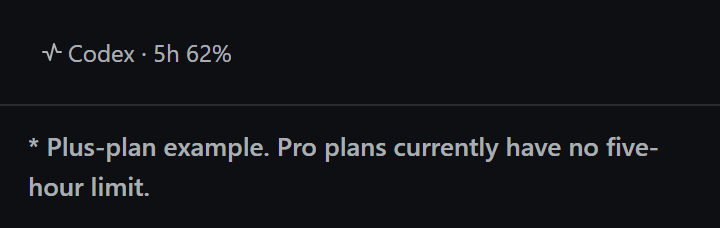
The status-bar chip is the always-on entry point. It shows the active provider and the governing subscription windows, not a private chat quota.
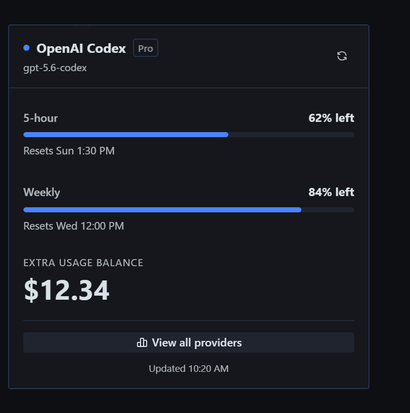
Clicking the chip opens the current provider’s detail popover: every governing window, reset time, and any paid fallback balance.
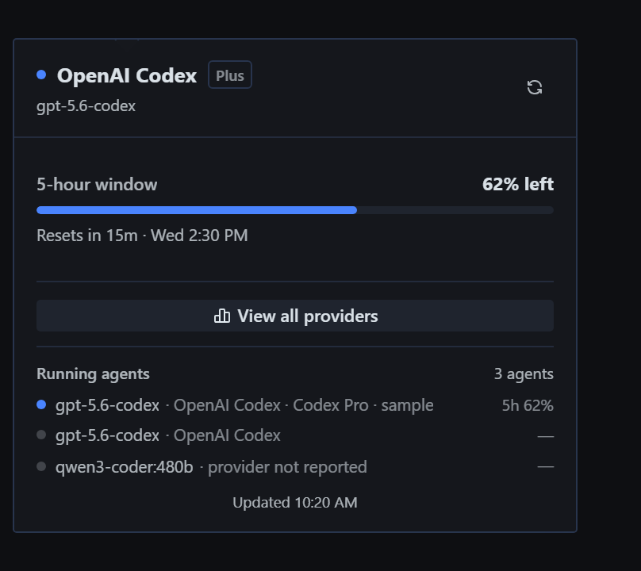
The footer attributes only what the gateway can prove. A child with a matching account shows the shared pool (5h 62%); a mismatched or missing account shows an em dash instead of borrowing another account’s balance.
The provider page
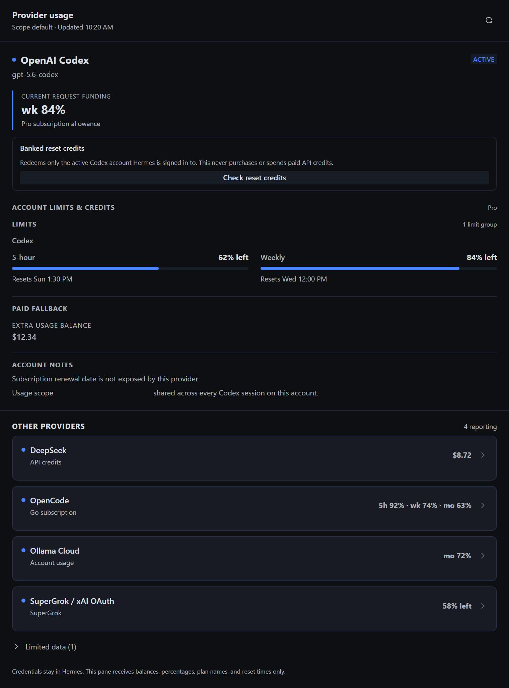
The full page keeps subscription windows and credit balances together: the active Codex allowance, DeepSeek API credit, OpenCode Go, Ollama Cloud, and an xAI sample row. On stock 0.23.1 the xAI row shows an official account link instead of credits.
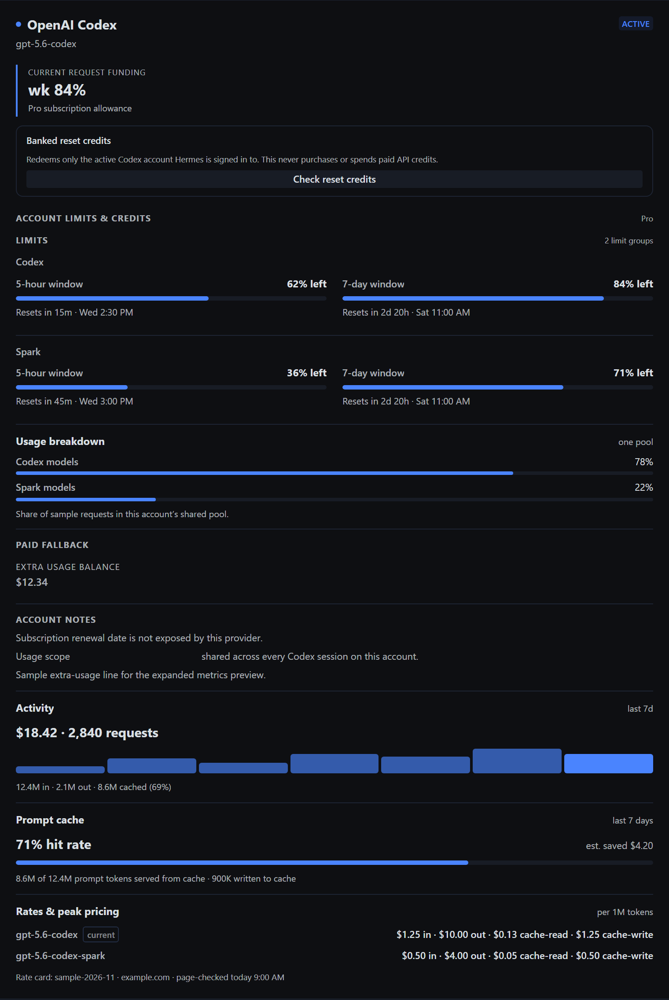
When an adapter supplies them, the active card extends to activity, prompt-cache efficiency, published token rates, and the shared-pool breakdown. Not every provider returns every field.
Banked reset credits
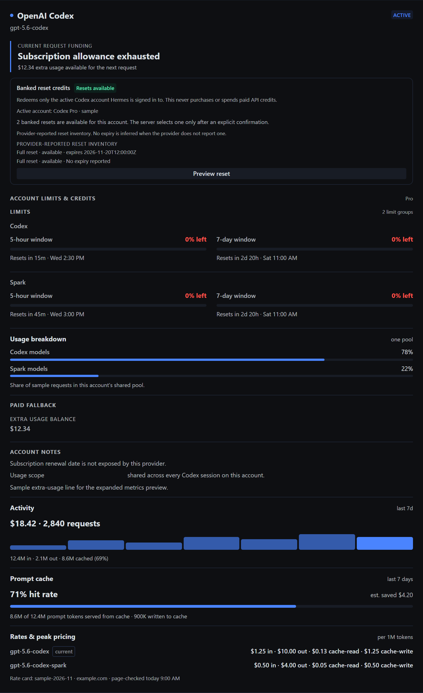
The stock-native reset panel reads the active Codex account only. This is a fixture summary: 2 banked resets, 1 usable now, with provider-reported inventory. No reset was redeemed.
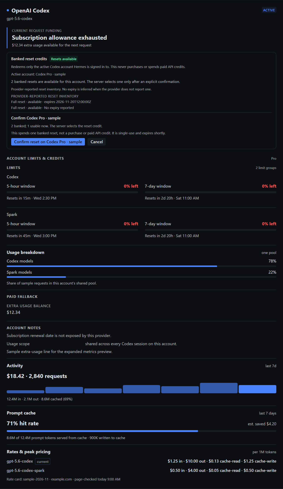
Preview/confirm is separately gated. This fixture stops at the confirmation preview; the confirm button is visible but was never clicked, and no reset was redeemed.
Popular provider cards
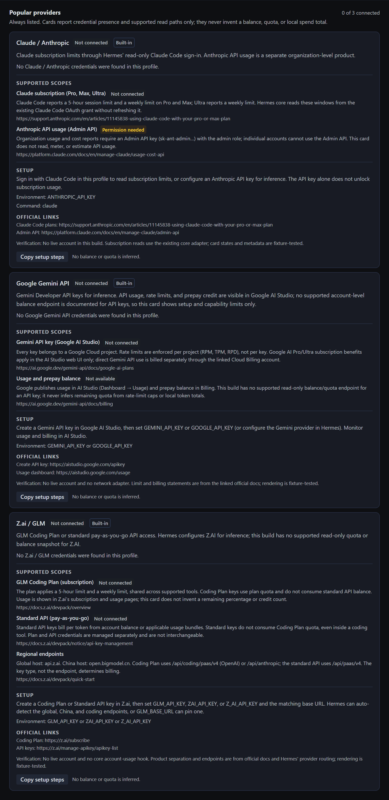
Three always-listed connection cards separate subscription quota from API billing. They report credential presence and supported read paths only; an unconnected card says so instead of showing an invented zero.
Definitions and trust states
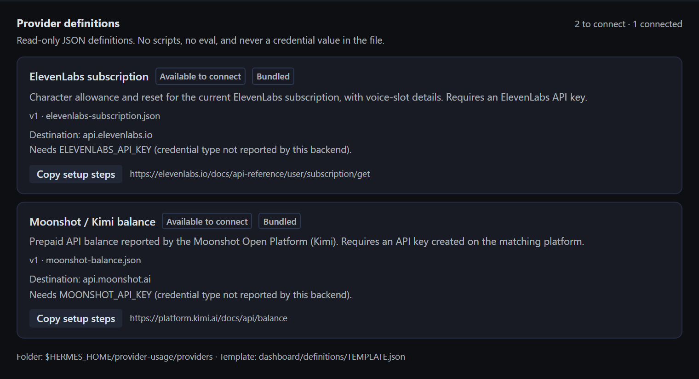
Read-only JSON definitions that ship in the catalog appear as Available to connect and name the exact missing environment variable. A card is setup guidance, not a live account test.
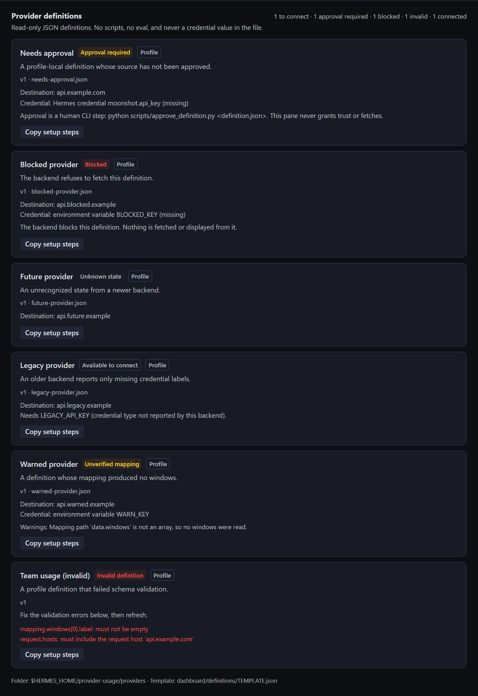
Profile-local definitions stay untrusted until a human approves that exact content. Editing the file, a mismatched approval record, or an unrecognized backend state is shown explicitly; nothing is fetched or invented.
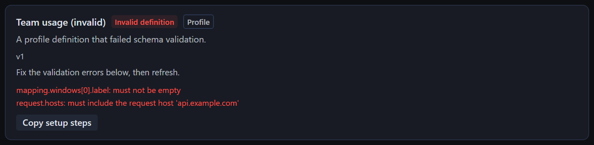
An invalid profile definition keeps its exact schema errors visible, so the fix is actionable instead of a silent empty card.
Responsive layout
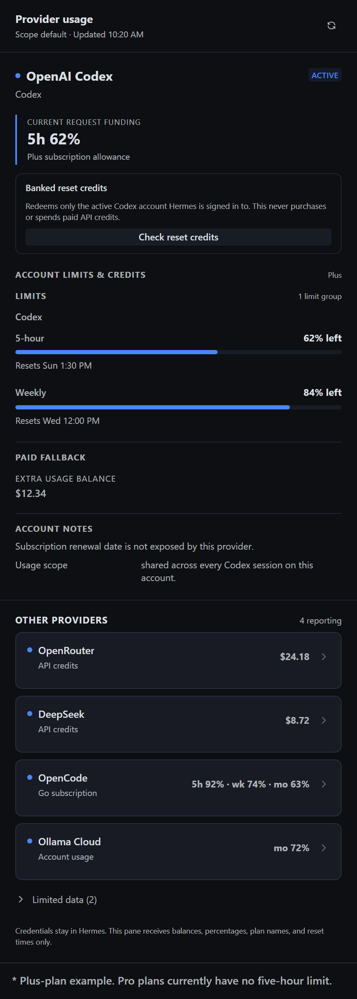
At a 420px pane width the plugin’s own layout stacks meters and provider cards without changing the data or hiding a reset.
What this package establishes — and what it does not
- The real
desktop/plugin.jscomponents render with the real SDK Button, Badge, Popover, StatusDot and theme tokens. - The chip is wired as the popover trigger; the open state, meters, provider rows, catalog cards, and running-agent footer are asserted by the capture script.
- It does not establish the packaged Electron shell, a real gateway socket, or live provider responses. It uses synthetic sample data; final release captures wait on the frozen stock build.
- The definition trust states and provider-card copy are fixture-tested. No real account was read for these images.